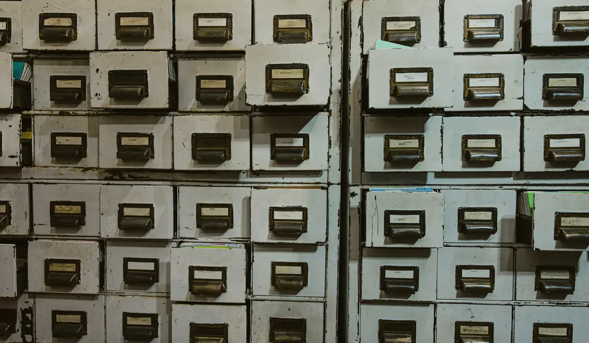

When an acquirer buys across a border, the target's problems rarely arrive in the data room. They sit in ownership chains, in local relationships and in habits that nobody thought to write down. These five questions are where we look first.
1. Who actually owns and controls the target?
A share register shows who holds legal title. It does not always show who directs the business. In many jurisdictions a company can be owned through nominee shareholders, family trusts or holding vehicles in a third country, and the person who signs the sale agreement may not be the person who benefits from it.
Start by mapping the full ownership chain to the individuals at the top, then compare it with what the sellers have told you. Gaps are not proof of wrongdoing, but they decide where the rest of the work should concentrate. A seller who cannot or will not explain a layer of the structure has told you something useful.
Pay equal attention to control that is exercised without ownership. Side letters, voting arrangements, shareholder loans and long-term supply contracts can hand real influence to a party who appears nowhere on the register. Ask who can appoint the management, who can block a sale, and who is owed money if the business fails.

2. Does the paper history match the operating reality?
Every target has a story told in filings: when it was formed, who sat on the board, which licences it holds. Every target also has an operating reality, visible in site visits, supplier relationships and the people who actually work there. Reconcile the two.
Signals worth testing
- Directors who hold dozens of appointments, or who share an address with unrelated companies.
- Licences and permits that are listed in the information memorandum but cannot be found at the issuing authority.
- Litigation or enforcement history that appears in local-language court records but not in English-language summaries.
- Changes of name, registered office or auditor in the years before the sale process began.
The most expensive liabilities are rarely hidden. They are simply written in a language, or a registry, that the buyer's team did not search.Daniel Reyes, Senior Associate
3. Who stands between the company and its customers?
Agents, distributors, customs brokers and consultants are a normal part of doing business abroad. They are also the most common route by which improper payments reach public officials, and the point at which anti-bribery statutes in the buyer's home jurisdiction can attach to the acquirer after closing.
Ask for the list of third parties that interact with government on the target's behalf, together with their contracts and payment histories. Look for success fees that are large relative to the work described, payments routed through accounts in unrelated countries, and intermediaries introduced by a single senior individual. None of these is conclusive alone. Together they merit direct enquiry.
Finally, remember that documents can be genuine and still misleading. A properly stamped certificate proves that something was filed on a given day; it does not prove that the activity it describes took place. Where a fact is material to price, seek a second, independent source for it.
4. Where does the money really move?
Financial statements describe what a company says it earned. Bank flows, intercompany balances and related-party transactions show how the cash behaves. Revenue that is recognised promptly but collected slowly, large balances owed by affiliates, and unexplained loans to or from shareholders all call for forensic review before the price is fixed.
It is worth checking at this stage whether the target's reported margins are consistent with comparable local businesses. An outlier may reflect a genuine advantage, or it may reflect income that is not what it appears to be.
Tax positions deserve the same scrutiny. Aggressive structures, unresolved assessments and reliance on local incentives can all transfer to a buyer along with the shares. Ask for correspondence with the tax authority, not only the filed returns, and ask what the target's advisers have said about the areas of greatest uncertainty.
5. What would others say if asked?
Reputation is evidence, and it is gathered differently from documents. Former employees, competitors, suppliers and regional journalists can often describe how a business and its principals behave when nobody is watching. This work must be done discreetly and by people who understand local context, because a careless enquiry can alert a seller or damage a deal that is otherwise sound.
The aim is not a scandal hunt. Most targets, examined fairly, turn out to be exactly what they claim, and a good enquiry says so plainly. What it should do is replace assumption with evidence, so that the board approving the transaction knows what it is buying and what it is not.
What to do with the answers
Adjust the deal, not only the decision
Findings seldom produce a simple yes or no. More often they shape the transaction: a price adjustment, a specific indemnity, an escrow, a condition that a particular intermediary be terminated before closing, or a staged payment tied to remediation. The earlier the findings arrive, the more of these tools remain available.
Plan for the first hundred days
Diligence does not end at signing. Record what remained unresolved, assign an owner for each item, and carry the list into integration planning. Our M&A due diligence work is scoped with this hand-over in mind, so that what we learn before the deal continues to protect the buyer after it.
If you are weighing an overseas acquisition and would like to discuss scope in confidence, contact our team.